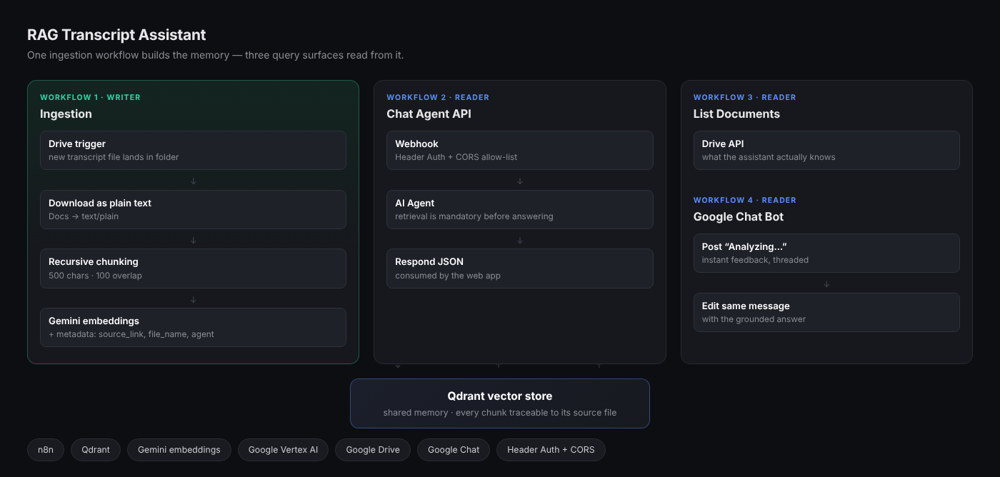

AI · RAG · n8n + Qdrant + Gemini
RAG Transcript Assistant
- Problem
- Hundreds of call transcripts sat in a Drive folder nobody read. Finding out whether three customers complained about the same thing meant opening thirty documents — and a general chatbot couldn't help, because it had never seen them.
- Approach
- Transcripts are chunked with overlap, embedded, and stored in a Qdrant vector store with metadata on every chunk. One ingestion workflow writes; three query surfaces read — a secured web API, a document-listing endpoint, and a Google Chat bot.
- Result
- The team asks questions in plain language and gets answers grounded in the actual transcripts, each traceable back to its source file — with the model required to say so when it finds nothing relevant.